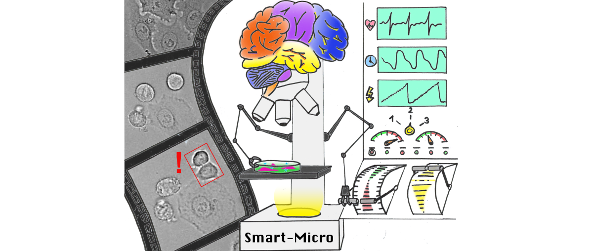

Intelligent Microscopes: The Future of Biological Imaging
Instituto Gulbenkian de Ciência researchers have published a review highlighting the transformative potential of data-driven microscopy powered by machine learning. The article, titled “The rise of data-driven microscopy powered by machine learning,” appears in the latest issue of the Journal of Microscopy.
The review, led by Leonor Morgado, explores how the integration of advanced computational techniques, particularly machine learning, is revolutionizing the field of optical microscopy. By enabling microscopes to automatically adjust acquisition parameters based on real-time data analysis, these intelligent systems can optimize imaging conditions, enhance image quality, and extract meaningful information without heavy reliance on manual intervention.
The authors discuss various machine learning algorithms, such as support vector machines, convolutional neural networks, and generative adversarial networks, and their applications in microscopy image analysis tasks, including classification, segmentation, tracking, and reconstruction. They also highlight pioneering works and recent advances in integrating machine learning into microscopy acquisition workflows, demonstrating the ability to capture rare events, optimize illumination, switch modalities, and trigger targeted experiments.
“Data-driven microscopy represents a new era for optical imaging, overcoming inherent limitations through real-time feedback and automation,” said Leonor Morgado, the lead author of the review. “Intelligent microscopes have the potential to transform bioimaging by opening up new experimental possibilities and providing unprecedented spatiotemporal views into biological processes across scales.”
The review also discusses the remaining challenges and future outlook for data-driven microscopy, emphasizing the need for robust machine learning models, purpose-built instrumentation, user-friendly software, and extensive validation to ensure reproducibility and minimize bias.
As data-driven platforms become more accessible and ubiquitous, they are expected to empower researchers to image smarter, not just faster, fueling fundamental discoveries in cell and infection biology at the molecular level in physiological context.